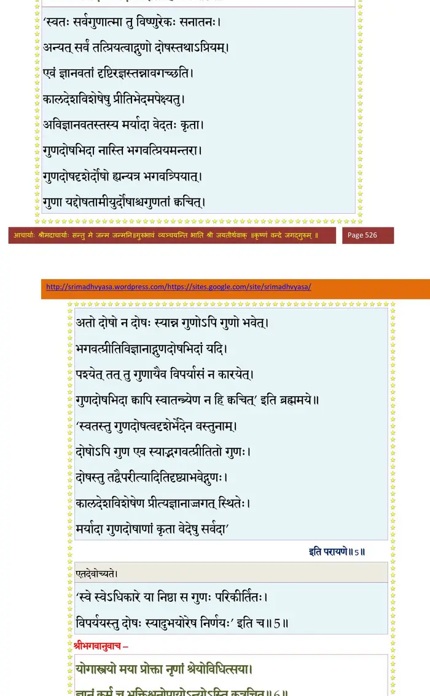
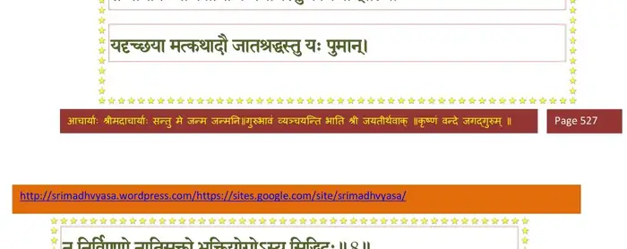
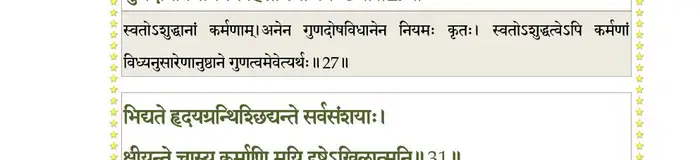
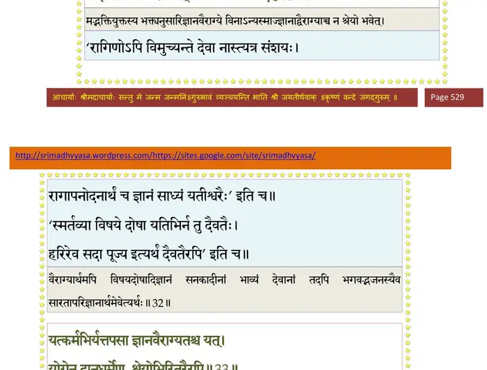
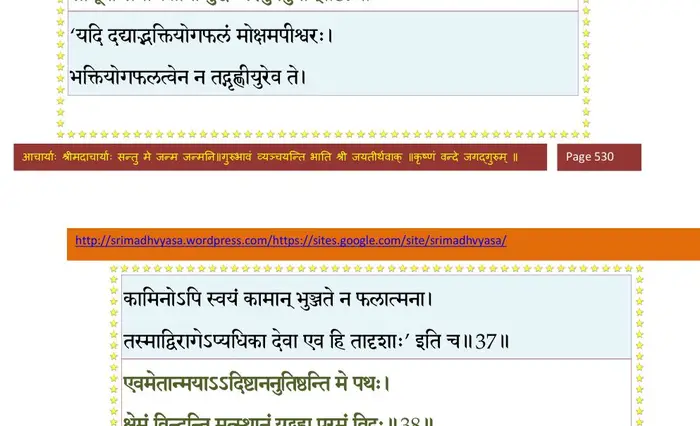
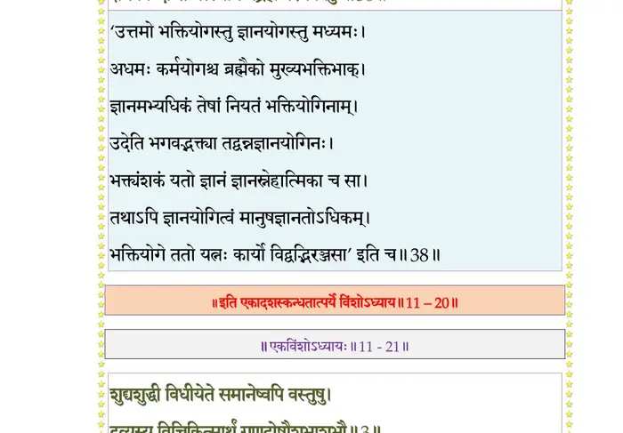

स्कन्ध 11 · अध्याय 20
श्लोक १
उद्धव उवाच–
विधिश्च प्रतिषेधश्च निगमो हीश्वरस्य ते ।
अपेक्षतेऽरविन्दाक्ष गुणदोषं च कर्मणाम् ।। १ ।।
विधिश्च प्रतिषेधश्च निगमो हीश्वरस्य ते ।
अपेक्षतेऽरविन्दाक्ष गुणदोषं च कर्मणाम् ।। १ ।।
श्लोक २
वर्णाश्रमविकल्पं च प्रतिलोमानुलोमजम् ।
द्रव्यदेशवयःकालान् स्वर्गं नरकमेव च ।। २ ।।
द्रव्यदेशवयःकालान् स्वर्गं नरकमेव च ।। २ ।।
श्लोक ३
गुणदोषभिदादृष्टिमन्तरेण वचस्तव ।
नैःश्रेयसं कथं नु स्यान्निषेधविधिलक्षणम् ।। ३ ।।
नैःश्रेयसं कथं नु स्यान्निषेधविधिलक्षणम् ।। ३ ।।
श्लोक ४
पितृदेवमनुष्याणां वेदश्चक्षुस्तवेश्वर ।
श्रेयस्त्वनुपलब्धेऽर्थे साध्यसाधनयोरपि ।। ४ ।।
श्रेयस्त्वनुपलब्धेऽर्थे साध्यसाधनयोरपि ।। ४ ।।
श्लोक ५
गुणदोषभिदादृष्टिर्नियमात् तेन हि स्वतः ।
नियमेनापवादश्च भिदाया इति हि भ्रमः ।। ५ ।।
नियमेनापवादश्च भिदाया इति हि भ्रमः ।। ५ ।।
भागवततात्पर्यनिर्णय

श्लोक ६
श्रीभगवानुवाच–
योगास्त्रयो मया प्रोक्ता नृणां श्रेयोविधित्सया ।
ज्ञानं कर्म च भक्तिश्च नोपायोऽन्योऽस्ति कुत्रचित्।। ६ ।।
योगास्त्रयो मया प्रोक्ता नृणां श्रेयोविधित्सया ।
ज्ञानं कर्म च भक्तिश्च नोपायोऽन्योऽस्ति कुत्रचित्।। ६ ।।
भागवततात्पर्यनिर्णय
श्लोक ७
निर्विण्णानां ज्ञानयोगो न्यासिनामिह कर्मसु ।
तेष्वनिर्विण्णचित्तानां कर्मयोगस्तु कर्मिणाम् ।। ७ ।।
तेष्वनिर्विण्णचित्तानां कर्मयोगस्तु कर्मिणाम् ।। ७ ।।
भागवततात्पर्यनिर्णय

श्लोक ८
यदृच्छया मत्कथादौ जातश्रद्धस्तु यः पुमान् ।
न निर्विण्णो नातिसक्तो भक्तियोगोऽस्य मुक्तिदः।। ८ ।।
न निर्विण्णो नातिसक्तो भक्तियोगोऽस्य मुक्तिदः।। ८ ।।
भागवततात्पर्यनिर्णय
श्लोक ९
तावत् कर्माणि कुर्वीत न निर्विद्येत यावता ।
मत्कथाश्रवणादौ वा श्रद्धा यावन्न जायते ।। ९ ।।
मत्कथाश्रवणादौ वा श्रद्धा यावन्न जायते ।। ९ ।।
श्लोक १०
स्वधर्मस्थो यजन् यज्ञैरनाशीःकाम उद्धव ।
न याति स्वर्गनरकौ यद्यन्यन्न समाचरेत् ।। १० ।।
न याति स्वर्गनरकौ यद्यन्यन्न समाचरेत् ।। १० ।।
श्लोक ११
अस्मिंल्लोके वर्तमानः स्वधर्मस्थोऽनघः शुचिः ।
ज्ञानं विशुद्धमाप्नोति मद्भक्तिं वा यदृच्छया ।। ११ ।।
ज्ञानं विशुद्धमाप्नोति मद्भक्तिं वा यदृच्छया ।। ११ ।।
श्लोक १२
स्वर्गिणोऽप्येतमिच्छन्ति लोकं निरयिणस्तथा ।
साधकं ज्ञानभक्तिभ्यामुभयं तदसाधकम् ।। १२ ।।
साधकं ज्ञानभक्तिभ्यामुभयं तदसाधकम् ।। १२ ।।
श्लोक १३
न नरः स्वर्गतिं काङ्क्षेन्नारकीं च विचक्षणः ।
नेमं लोकं च काङ्क्षेत देहावेशात् प्रमाद्यति।। १३ ।।
नेमं लोकं च काङ्क्षेत देहावेशात् प्रमाद्यति।। १३ ।।
श्लोक १४
एवं विद्वान् पुरा मृत्योरभावाय घटेत सः ।
अप्रमत्त इदं ज्ञात्वा मर्त्यमप्यर्थसिद्धिदम् ।। १४ ।।
अप्रमत्त इदं ज्ञात्वा मर्त्यमप्यर्थसिद्धिदम् ।। १४ ।।
श्लोक १५
छिद्यमानं कालावयवैः कृतनीडं वनस्पतिम् ।
खगः स्वदेहमुत्सृज्य क्षेमं याति ह्यलम्पटः ।। १५ ।।
खगः स्वदेहमुत्सृज्य क्षेमं याति ह्यलम्पटः ।। १५ ।।
श्लोक १६
अहोरात्रैश्छिद्यमानं बुद्ध्वाऽयुर्भयवेपथुः ।
मुक्तसङ्गः परं बुद्ध्वा निरीह उपशाम्यति ।। १६ ।।
मुक्तसङ्गः परं बुद्ध्वा निरीह उपशाम्यति ।। १६ ।।
श्लोक १७
नृदेहमासाद्य सुदुर्लभं यः प्लवं सुकल्पं (सुकल्यं) गुरुकर्णधारम् ।
मयाऽनुकूलेन नभस्वतेरितं पुमान् भवाब्धिं न तरेत् स मार्गणः ।। १७ ।।
मयाऽनुकूलेन नभस्वतेरितं पुमान् भवाब्धिं न तरेत् स मार्गणः ।। १७ ।।
भागवततात्पर्यनिर्णय

श्लोक १८
यदाऽऽरम्भेषु निर्विण्णो विरक्तः संयतेन्द्रियः ।
अभ्यासेनात्मनो योगी धारयेदचलं मनः ।। १८ ।।
अभ्यासेनात्मनो योगी धारयेदचलं मनः ।। १८ ।।
श्लोक १९
धार्यमाणं मनो यर्हि भ्राम्यदाश्वनवस्थितम् ।
अतन्द्रितोऽनुरोधेन मार्गेणात्मवशं नयेत् ।। १९ ।।
अतन्द्रितोऽनुरोधेन मार्गेणात्मवशं नयेत् ।। १९ ।।
श्लोक २०
मनोगतिं न विसृजेज्जितप्राणो जितेन्द्रियः ।
सत्वसम्पन्नया बुद्ध्या मन आत्मवशं नयेत् ।। २० ।।
सत्वसम्पन्नया बुद्ध्या मन आत्मवशं नयेत् ।। २० ।।
श्लोक २१
एष वै परमो योगो मनसः सङ्ग्रहः स्मृतः ।
हृदयज्ञत्वमन्विच्छन् दमश्चैवेच्छतो मुहुः ।। २१ ।।
हृदयज्ञत्वमन्विच्छन् दमश्चैवेच्छतो मुहुः ।। २१ ।।
श्लोक २२
साङ्ख्येन सर्वभावानां प्रतिलोमानुलोमतः ।
भवाप्ययावनुध्यायेन्मनो यावत् प्रसीदति ।। २२ ।।
भवाप्ययावनुध्यायेन्मनो यावत् प्रसीदति ।। २२ ।।
श्लोक २३
निर्विण्णस्य विरक्तस्य पुरुषस्यात्मवेदिनः ।
मनस्त्यजति दौरात्म्यं (दौर्भाग्यं) चिन्तितस्यानुचिन्तया।। २३ ।।
मनस्त्यजति दौरात्म्यं (दौर्भाग्यं) चिन्तितस्यानुचिन्तया।। २३ ।।
श्लोक २४
यमादिभिर्योगपथैरान्वीक्षिक्या च विद्यया ।
ममार्चोपासनाभिर्वा नान्यैर्योगं स्मरेन्मनः ।। २४ ।।
ममार्चोपासनाभिर्वा नान्यैर्योगं स्मरेन्मनः ।। २४ ।।
श्लोक २५
यदि कुर्यात् प्रमादेन योगी कर्म विगर्हितम् ।
योगेनैव दहेदंहो नान्यं यत्नं (यन्त्रं) कदाचन ।। २५ ।।
योगेनैव दहेदंहो नान्यं यत्नं (यन्त्रं) कदाचन ।। २५ ।।
श्लोक २६
स्वे स्वेऽधिकारे या निष्ठा स गुणः परिकीर्तितः ।
विपर्ययस्तु दोषः स्यादुभयोरेष निर्णयः ।। २६ ।।
विपर्ययस्तु दोषः स्यादुभयोरेष निर्णयः ।। २६ ।।
श्लोक २७
कर्मणां जात्यशुद्धानामनेन नियमः कृतः ।
गुणदोषविधानेन त्वंहसां त्याजनेच्छया ।। २७ ।।
गुणदोषविधानेन त्वंहसां त्याजनेच्छया ।। २७ ।।
भागवततात्पर्यनिर्णय

श्लोक २८
जातश्रद्धो मत्कथासु निर्विण्णः सर्वकर्मसु ।
वेद दुःखात्मकान् कामान् परित्यागेऽप्यनीश्वरः।। २८ ।।
वेद दुःखात्मकान् कामान् परित्यागेऽप्यनीश्वरः।। २८ ।।
श्लोक २९
ततो भजेत मां प्रीतः श्रद्धालुर्दृढनिश्चयः ।
जुषमाणश्च तान् कामान् दुःखोदर्कांश्च गर्हयन्।। २९ ।।
जुषमाणश्च तान् कामान् दुःखोदर्कांश्च गर्हयन्।। २९ ।।
श्लोक ३०
प्रोक्तेन भक्तियोगेन भजतो माऽसकृन्मुनेः ।
कामा हृदिस्था नश्यन्ति सर्वे मयि हृदि स्थिते।। ३० ।।
कामा हृदिस्था नश्यन्ति सर्वे मयि हृदि स्थिते।। ३० ।।
श्लोक ३१
भिद्यते हृदयग्रन्थिश्छिद्यन्ते सर्वसंशयाः ।
क्षीयन्ते चास्य कर्माणि मयि दृष्टेऽखिलात्मनि ।। ३१ ।।
क्षीयन्ते चास्य कर्माणि मयि दृष्टेऽखिलात्मनि ।। ३१ ।।
भागवततात्पर्यनिर्णय
श्लोक ३२
तस्मान्मद्भक्तियुक्तस्य योगिनो वै मदात्मनः ।
न ज्ञानान्न च वैराग्यात् प्रायः श्रेयो भवेदिह ।। ३२ ।।
न ज्ञानान्न च वैराग्यात् प्रायः श्रेयो भवेदिह ।। ३२ ।।
भागवततात्पर्यनिर्णय

श्लोक ३३
यत् कर्मभिर्यत् तपसा ज्ञानवैराग्यतश्च यत् ।
योगेन दानधर्मेण श्रेयोभिरितरैरपि ।। ३३ ।।
योगेन दानधर्मेण श्रेयोभिरितरैरपि ।। ३३ ।।
भागवततात्पर्यनिर्णय
श्लोक ३४
सर्वं मद्भक्तियोगेन मद्भक्तो लभतेऽञ्जसा ।
स्वर्गापवर्गं मद्धाम कथञ्चिद् यदि वाञ्छति।। ३४ ।।
स्वर्गापवर्गं मद्धाम कथञ्चिद् यदि वाञ्छति।। ३४ ।।
भागवततात्पर्यनिर्णय
श्लोक ३५
न किञ्चित् साधवो धीरा भक्ता ह्येकान्तिनो मम ।
वाञ्छन्त्यपि मया दत्तं कैवल्यमपुनर्भवम् ।। ३५ ।।
वाञ्छन्त्यपि मया दत्तं कैवल्यमपुनर्भवम् ।। ३५ ।।
भागवततात्पर्यनिर्णय
श्लोक ३६
नैरपेक्ष्यं परं प्राहुर्निःश्रेयसमकल्मषम् ।
तस्मान्निराशिषो भक्तिर्निरपेक्षस्य मे भवेत् ।। ३६ ।।
तस्मान्निराशिषो भक्तिर्निरपेक्षस्य मे भवेत् ।। ३६ ।।
भागवततात्पर्यनिर्णय
श्लोक ३७
न मय्येकान्तभक्तानां गुणदोषोद्भवा गुणाः ।
साधूनां समचित्तानां बुद्धेः (पर)पारमुपेयुषाम् ।। ३७ ।।
साधूनां समचित्तानां बुद्धेः (पर)पारमुपेयुषाम् ।। ३७ ।।
भागवततात्पर्यनिर्णय

श्लोक ३८
एवमेतान् मयाऽऽदिष्टाननुतिष्ठन्ति मे पथः ।
क्षेमं विन्दन्ति मत्स्थानं यद् ब्रह्म परमं विदुः ।। ३८ ।।
क्षेमं विन्दन्ति मत्स्थानं यद् ब्रह्म परमं विदुः ।। ३८ ।।
भागवततात्पर्यनिर्णय

।। इति श्रीमद्भागवते एकादशस्कन्धे विंशोऽध्यायः ।।